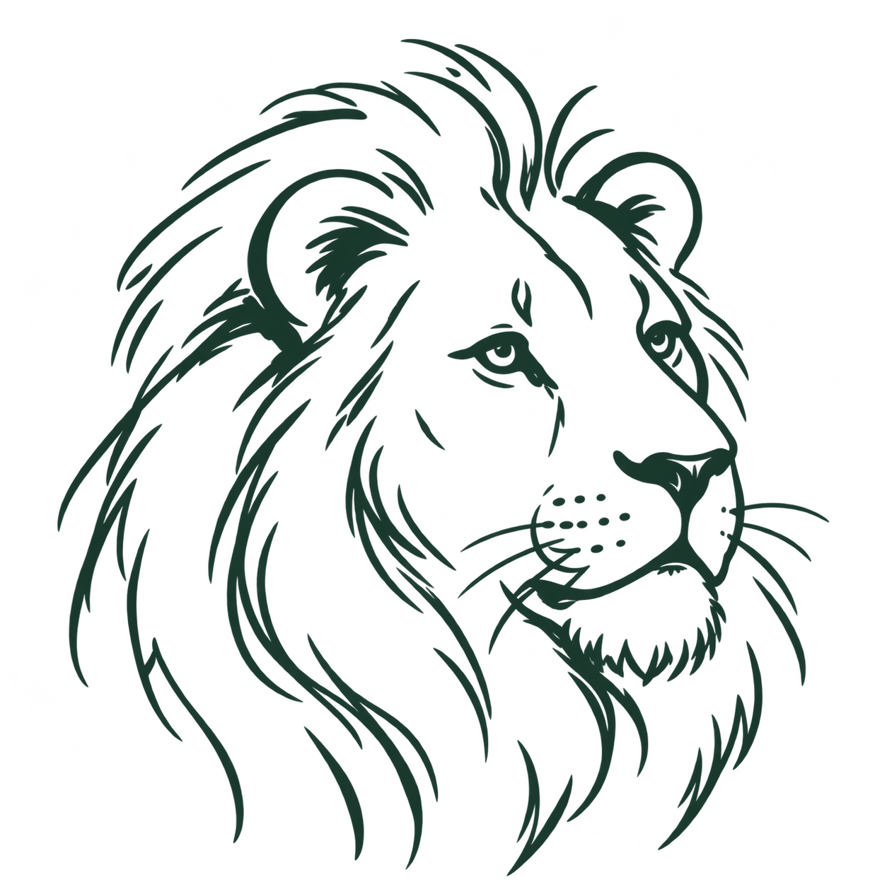
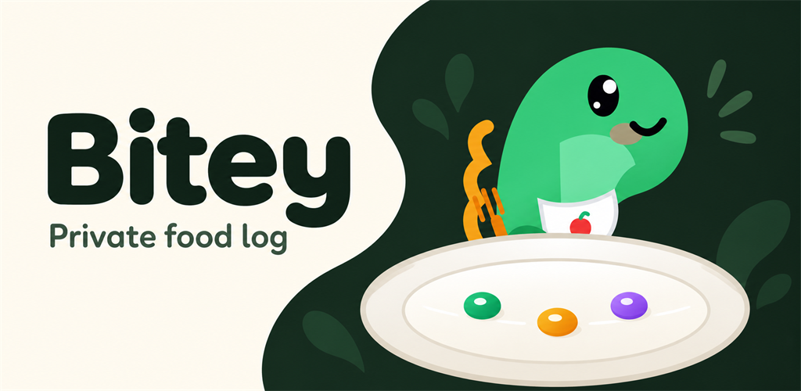
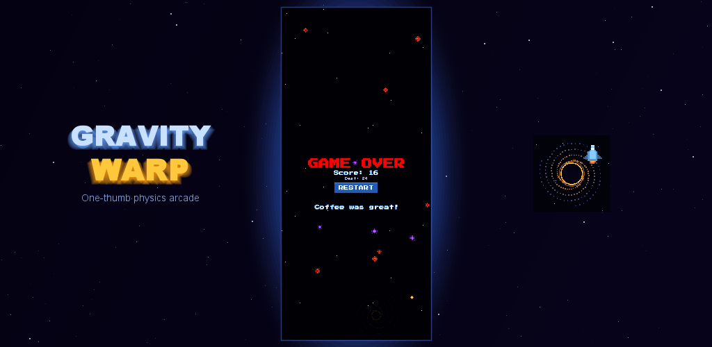
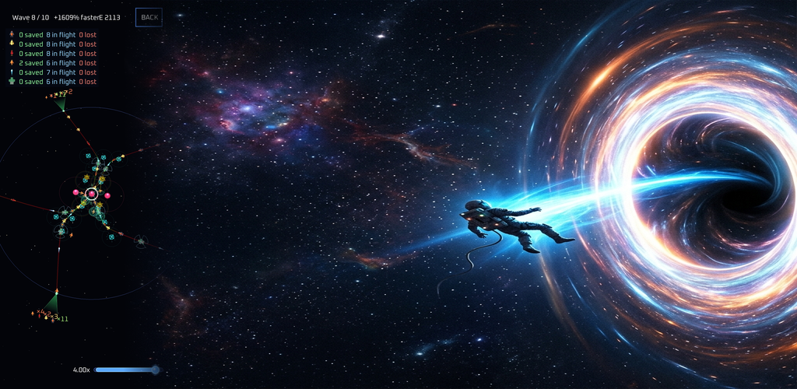

Outils créatifs
Kerfloom
Transformez une photo en motifs reliés à découper dans le métal.

ZandaulionLes pages des projets sont disponibles dans les 12 langues. Les notices de confidentialité restent en anglais, à leurs adresses habituelles.
Bienvenue. Je crée des applications, des jeux et de petits outils.
Certains utiles, d’autres ludiques. Tous à découvrir ici.
Trois portes sur l’atelier.

Et si une photo devenait une pièce de métal découpé ? Des motifs, des portraits et un art qui tient ensemble.
Découvrez ce qui prend forme ↗
Une Terre vivante qui tourne dans votre poche. Prenez du recul et explorez notre petite place dans un immense univers.
Faites le tour de la Terre ↗
Une photo, une portion, une meilleure idée de ce que vous mangez. Avec un gentil dinosaure à vos côtés.
Rencontrez Bitey ↗Un outil utile. Une idée insolite. Une piste qui mérite d’être suivie.
La curiosité n’a pas d’ordre établi.
Transformez une photo en motifs reliés à découper dans le métal.

Une petite planète dans votre poche. Explorez la Terre avec des données astronomiques actuelles et celles de la NASA.
Photographiez un repas, ajustez la portion et tenez un journal alimentaire avec Bitey.

Une photo devient un relief 3D, découpé en couches pour créer un portrait métallique.

Modifiez la gravité et faites pousser un jardin dans un jeu de réflexion paisible fondé sur la physique.

Un endroit pour les pensées, les photos et les notes vocales avant qu’elles ne s’envolent.

Montrez comment les choses circulent. Créez et exportez des diagrammes dans votre navigateur.

Trouvez un peu de mouvement pour aujourd’hui avec le matériel que vous avez déjà.

Frayez-vous un chemin entre des puits de gravité dans un jeu d’arcade rétro fondé sur la physique.

Regardez au-delà du cours de l’action pour comprendre ce qui anime une entreprise.

Planifiez les grandes dépenses familiales, de la première estimation à la dernière mensualité.

Testez votre intuition de la gravité avec des énigmes de physique orbitale.

Suivez les trains roumains, leurs itinéraires et l’évolution des retards.

Suivez la chaleur de votre maison grâce à l’historique des capteurs et aux courbes de température.

Une autre idée du tower defense : utilisez la physique orbitale et des rayons de secours pour sauver des vies.

Suivez les annonces, comparez les variations de prix et repérez une bonne affaire.

Notez votre tension, suivez son évolution et exportez votre historique. Une seule application pour Android et le Web.

Explorez les admissions passées et simulez vos choix de lycée à Bucarest.

Une petite brique qui aide les applications Web à fonctionner hors connexion et à rester à jour.

Une petite console pour gérer les invitations et les appareils des applications Web privées.
Aucun projet ici pour le moment. Essayez un autre mot ou explorez toute la collection.
Je suis le créateur de Zandaulion. Voici mon petit atelier sur le Web : une collection d’applications, de jeux et d’outils, des habitudes quotidiennes à l’art et à la physique orbitale.
Flânez, essayez quelque chose ou jetez un œil au code. Si une création éveille votre imagination, j’aimerais le savoir.